Enrichment & Resources
Parent Connect Bulletins
Practical Guidance for Every Stage of Your Child’s Journey
Parenting evolves as children grow — and so does the support they need.
At ISWK, we believe that meaningful home–school partnership is strengthened when parents have access to timely, relevant and practical guidance. Parent Connect Bulletins brings together carefully curated resources from our Parenting Calendar, offering parents simple ideas, practical strategies and thoughtful guidance to support their child’s learning, wellbeing, relationships and growing independence.
From the early years to the board examination years, each resource is designed around the developmental needs and priorities of that stage, helping parents understand what matters now and how they can support their child at home.
A Resource for Every Step
Whether you are looking for ideas to establish a positive routine, support independent learning, navigate adolescence, strengthen resilience or help your child manage academic pressure, there is a Parent Connect resource for every stage and every step.
- Read.
- Reflect.
- Apply.
- Connect.
Because when parents are informed, empowered and connected, children are better supported to learn, grow, flourish and thrive.
Explore Resources by Stage
Each stage has its own set of Parent Connect resources, shaped around what matters most at that point in your child’s journey.
-
FS Foundation Stage
Nurturing the Foundations
Resources for parents of our youngest learners, focusing on emotional security, positive routines, language development, school readiness, early literacy, social skills, healthy screen habits, fine-motor development, listening, attention, kindness and early independence.
-
PS Preparatory Stage
Building Confident & Independent Learners
Practical guidance to help children develop strong learning habits, focus, confidence, problem-solving skills, resilience, responsible technology use, positive peer relationships, time management and increasing independence.
-
MS Middle Stage
Understanding, Guiding & Empowering
Resources to help parents navigate the pre-teen and adolescent years — from emotional regulation, peer influence and healthy friendships to digital responsibility, self-identity, resilience, boundaries, self-discipline, study planning and future academic readiness.
-
SS Senior Stage
Preparing for Purpose & Future Readiness
Guidance for parents supporting adolescents through academic ownership, career awareness, responsible decision-making, resilience, stress management, financial literacy, examination preparation, emotional balance and the transition towards higher education and life beyond school.
Bulletin Library
Browse every Parent Connect Bulletin, or filter to the stage your child is in.
-
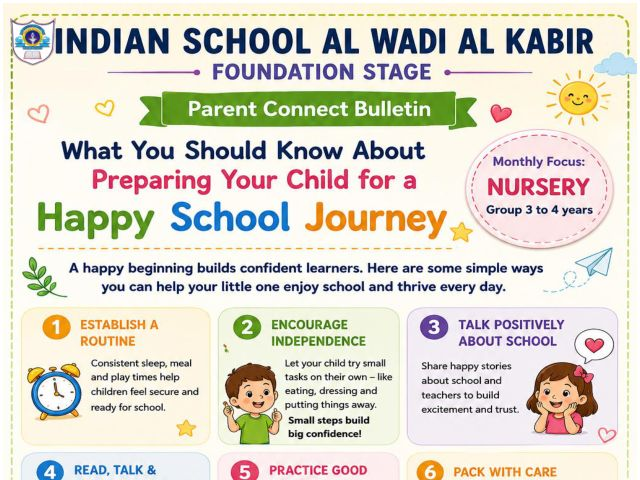
Foundation Stage Preparing Your Child for a Happy School Journey
-
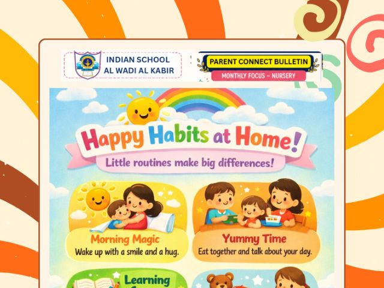
Foundation Stage Happy Habits at Home
-
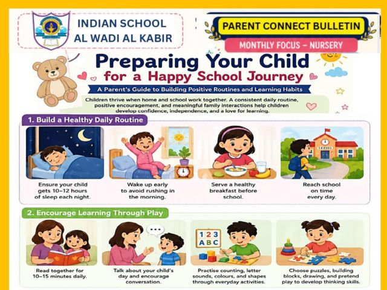
Foundation Stage Building Positive Routines and Learning Habits
-
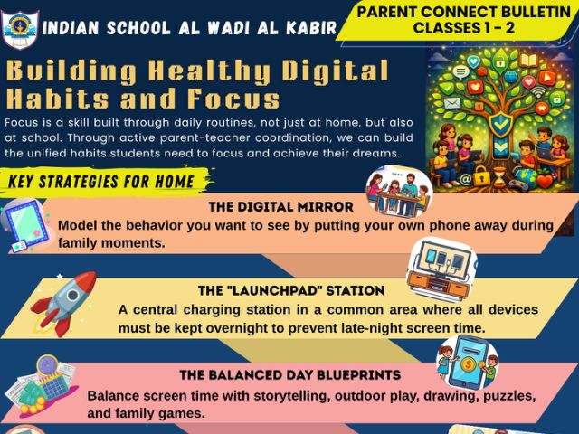
Foundation Stage Building Healthy Digital Habits and Focus
-
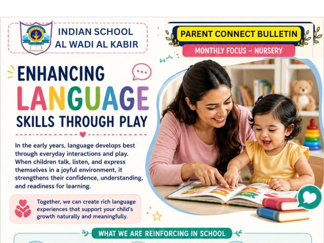
Foundation Stage Enhancing Language Skills Through Play
-
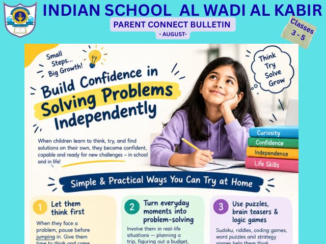
Preparatory Stage Build Confidence in Solving Problems Independently
-
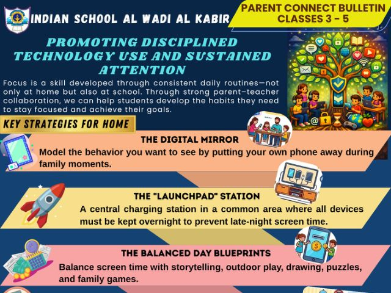
Preparatory Stage Promoting Disciplined Technology Use and Sustained Attention
-
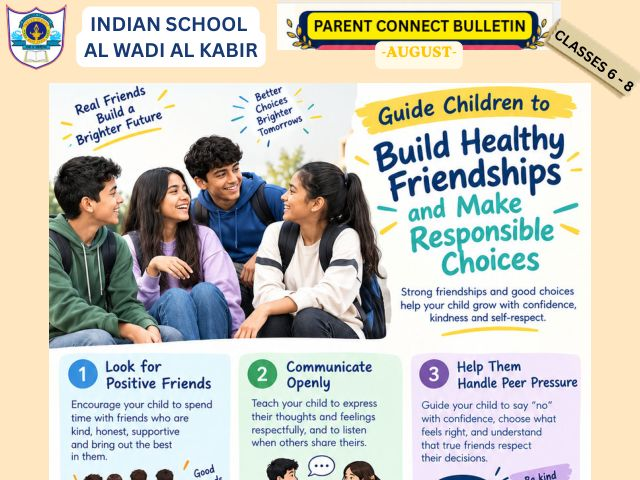
Middle Stage Build Healthy Friendships and Make Responsible Choices
-
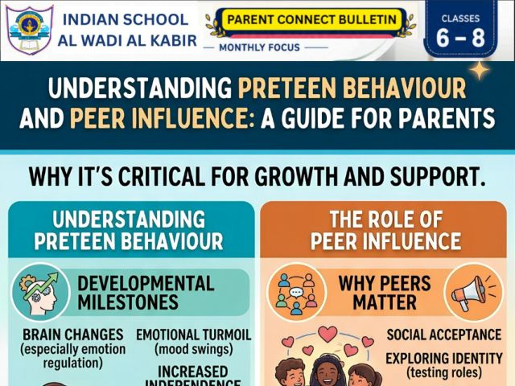
Middle Stage Understanding Preteen Behaviour and Peer Influence
-
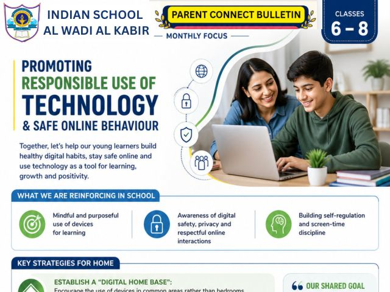
Middle Stage Promoting Responsible Use of Technology & Safe Online Behaviour
-
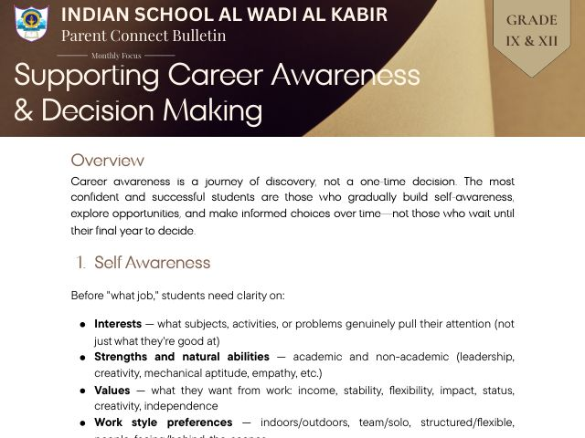
Senior Stage Supporting Career Awareness & Decision Making
-
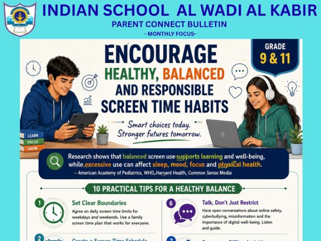
Senior Stage Encourage Healthy, Balanced and Responsible Screen Time Habits
-
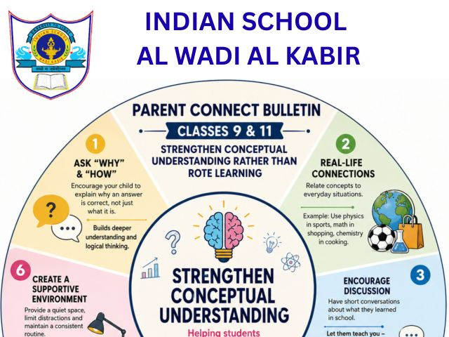
Senior Stage Strengthen Conceptual Understanding Rather Than Rote Learning
-
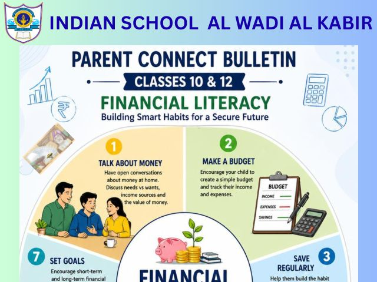
Senior Stage Financial Literacy: Building Smart Habits for a Secure Future
No bulletins for this stage yet — please check back soon.
Gallery
Moments from Parent Connect Hours, Mother’s Day celebrations, the Sultan’s Feast and parent engagement sessions across the Foundation, Preparatory, Middle and Senior stages — the everyday scenes that show what partnership looks like at Indian School Al Wadi Al Kabir.